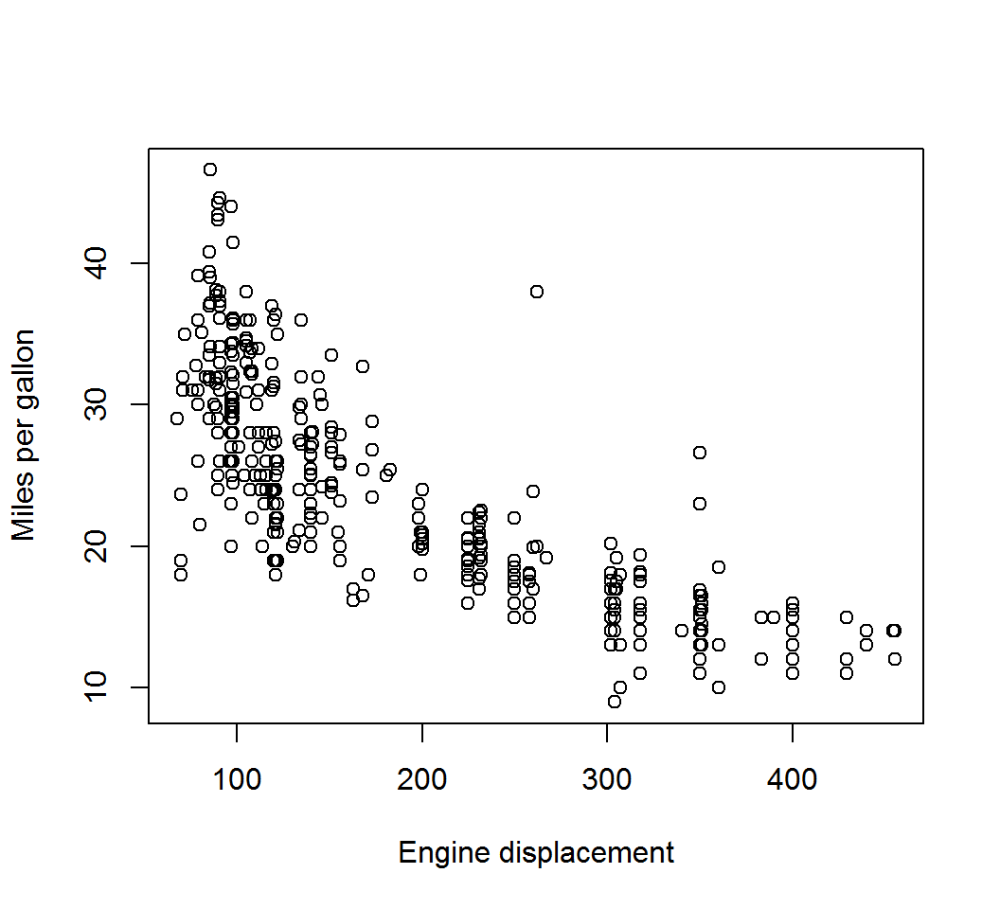
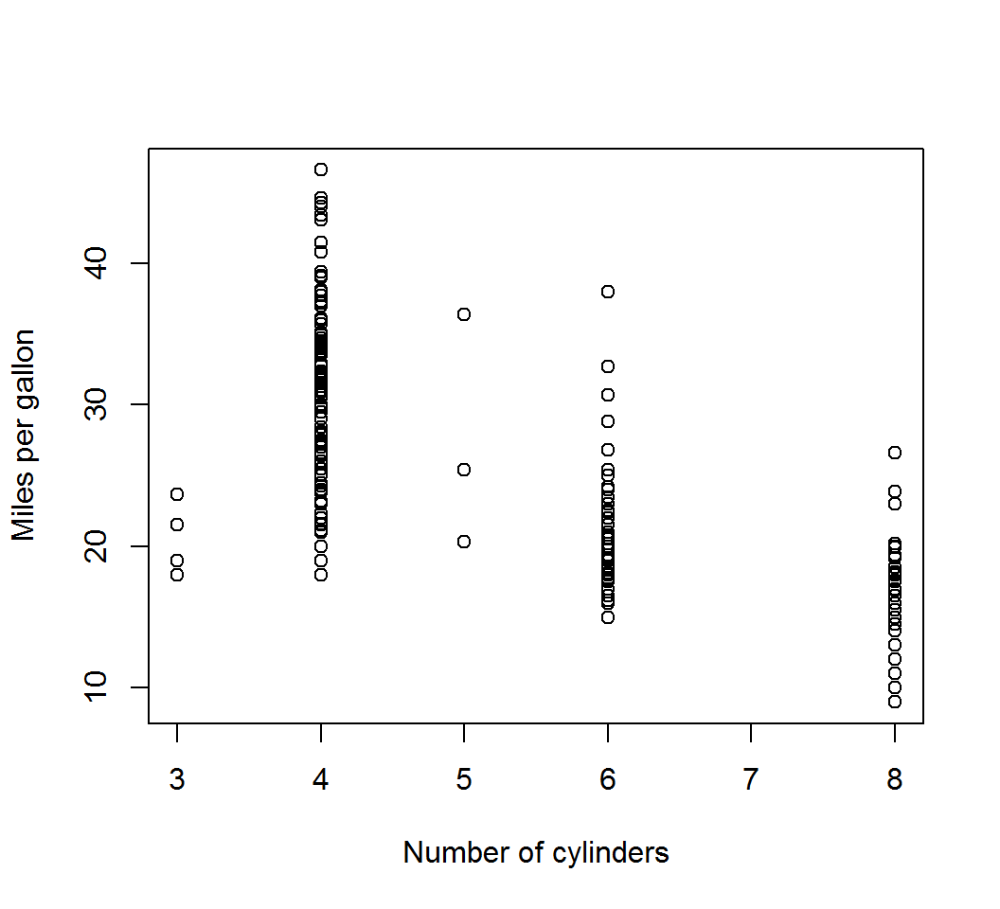
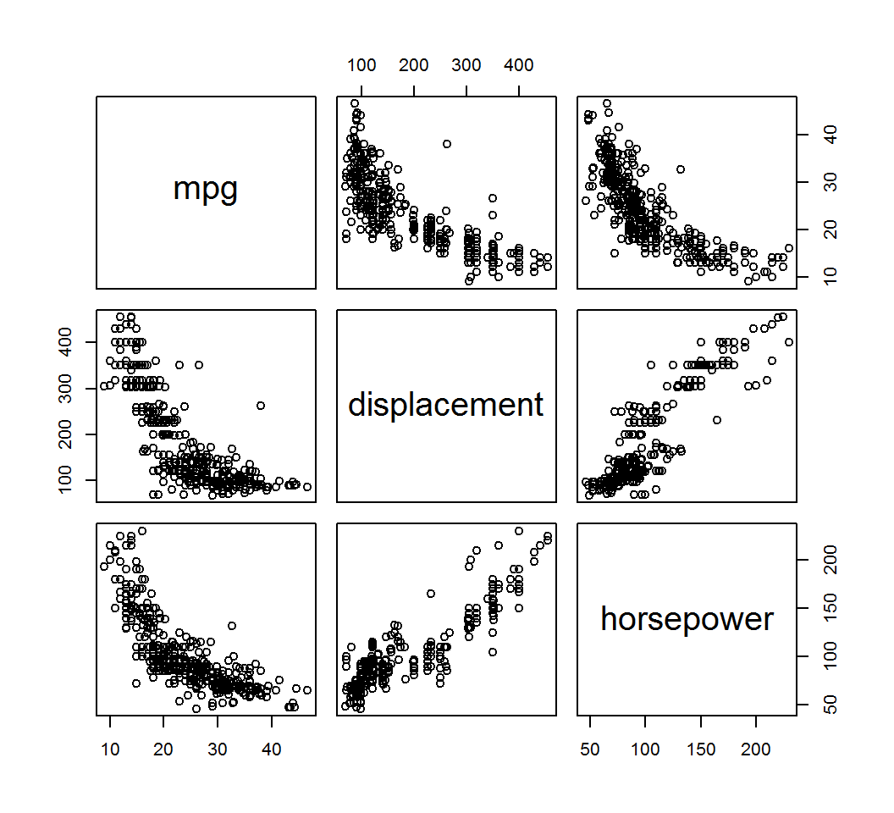
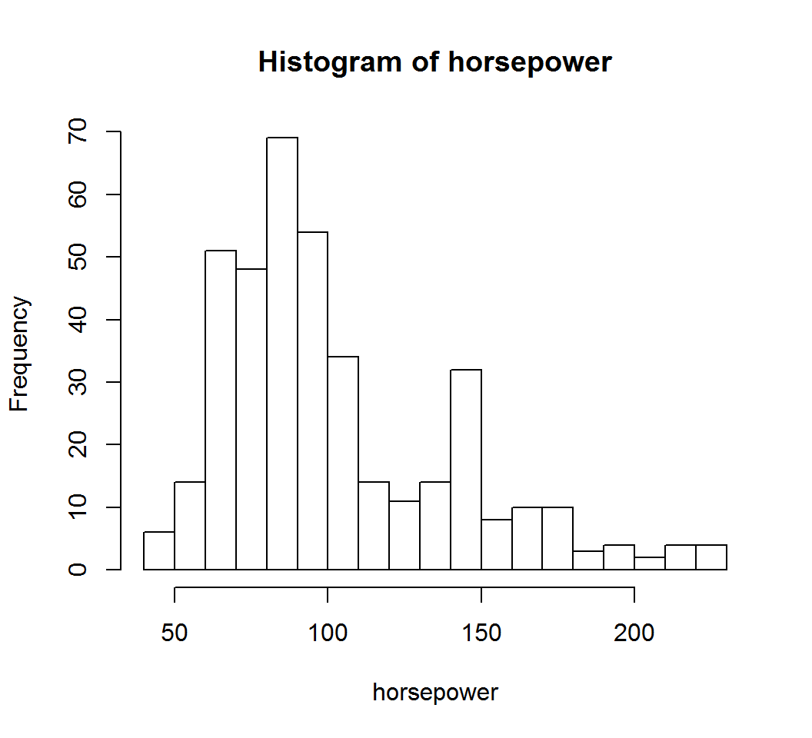

Stat 435 Lab Notes 1
Xiongzhi Chen
Washington State University

Basic objects and their operations
Important objects
Some important objects in R
vectormatrixanddata.framecharacterandfactor
In terms of data analysis, data.frame is perhaps the most important R object.
vector
Vectors can be created by concatenation (c), sequencing (: or seq), or replication (rep):
> # create a vector via concatenation
> x = c(1,5,0.8,10)
> x
[1] 1.0 5.0 0.8 10.0
> # create a vector via seq
> y=1:3
> y
[1] 1 2 3
> z = seq(from=1,to=10,by=2)
> z
[1] 1 3 5 7 9
> # create a vector via rep
> w = rep(1,times=5)
> w
[1] 1 1 1 1 1
> u = rep(c(1,2),each=3)
> u
[1] 1 1 1 2 2 2vector
Entries of a vector can be accessed by specifying their indices as a vector:
> x = c(1,5,0.8,10)
> x
[1] 1.0 5.0 0.8 10.0
> # obtain number of entries of a vector
> length(x)
[1] 4
> # access entries of a vector
> x[1]
[1] 1
> x[1:3]
[1] 1.0 5.0 0.8
> # remove some entries
> y=x[-c(1,3)]
> y
[1] 5 10matrix and data.frame
Both data.frame and matrix have a grid layout in rows and columns. However, the object types for all columns of a matrix have to be the same.
- A matrix can be created by the command
matrix, or by combining vectors as rows (rbind) or as columns (cbind) - A
matrixcan be coerced into a data frame viaas.data.frame - A data frame can be created by the command
data.frameor automatically when importing data
matrix and data.frame
> # create a matrix
> x = matrix(1:10,nrow=2,ncol=5)
> x
[,1] [,2] [,3] [,4] [,5]
[1,] 1 3 5 7 9
[2,] 2 4 6 8 10
> dim(x)
[1] 2 5
> # convert x into a data.frame
> y = as.data.frame(x)
> y
V1 V2 V3 V4 V5
1 1 3 5 7 9
2 2 4 6 8 10
> dim(y)
[1] 2 5
> # indexing for matrix or data.frame
> x[c(1,2),c(1,5)]
[,1] [,2]
[1,] 1 9
[2,] 2 10
> y[c(1,2),c(1,5)]
V1 V5
1 1 9
2 2 10
> # access variable in data frame via $
> y$V1
[1] 1 2matrix and data.frame
> x = 1:3; y = 2:4
> # create a matrix
> z = cbind(x,y)
> z
x y
[1,] 1 2
[2,] 2 3
[3,] 3 4
> # create a matrix
> w = rbind(x,y)
> w
[,1] [,2] [,3]
x 1 2 3
y 2 3 4
> # make w into data.frame
> v = as.data.frame(w)
> v
V1 V2 V3
x 1 2 3
y 2 3 4
> # add a variable to v
> v$New = c(10,20)
> v
V1 V2 V3 New
x 1 2 3 10
y 2 3 4 20Operations on vectors/matrices
The operations +, -, * (multiplication), /, and ^ (power) operate entrwise on vectors and matrices.
> x = 1:3
> x
[1] 1 2 3
> y = 2:4
> y
[1] 2 3 4
> x+y
[1] 3 5 7
> x-y
[1] -1 -1 -1
> x*y
[1] 2 6 12
> x^2
[1] 1 4 9
> sqrt(x)
[1] 1.000000 1.414214 1.732051Operations on vectors/matrices
> x = 1:3
> x
[1] 1 2 3
> y = 2:4
> y
[1] 2 3 4
> # transpose of y
> t(y)
[,1] [,2] [,3]
[1,] 2 3 4
> # matrix multiplication
> x%*%y
[,1]
[1,] 20
> x%*%t(y)
[,1] [,2] [,3]
[1,] 2 3 4
[2,] 4 6 8
[3,] 6 9 12x%*%y: sum of products of pairs of entries with matching indices.
character and factor
character is often used to name variables or annotate figures, and factor to describe values of a discrete random variable.
- A
charactercan be created by enclosing a sequence of characters by quotes (''or" "), or by concatenation (c) of characters - A
factorcan be created by the commandfactoror by coercing (as.factor)
character
> a = 'This is'
> a
[1] "This is"
> b = 'Stat 435'
> # both a and b are characters
> # concatenate strings via paste
> w=paste(a,b,sep=" ")
> w
[1] "This is Stat 435"
> # concatenate strings via c
> z = c(a,b)
> #z is a vector whose entries are characters
> z[1]
[1] "This is"
> z[2]
[1] "Stat 435"factor
> x = c(rep('F',6),rep('M',6))
> x
[1] "F" "F" "F" "F" "F" "F" "M" "M" "M" "M" "M" "M"
> # obtain object type
> class(x)
[1] "character"
> # convert x into factor
> y = as.factor(x)
> y
[1] F F F F F F M M M M M M
Levels: F M
> class(y)
[1] "factor"
> levels(y)
[1] "F" "M"factor
> x = c(rep(1,6),rep(2,6))
> x
[1] 1 1 1 1 1 1 2 2 2 2 2 2
> class(x)
[1] "numeric"
> # convert x into factor
> y = as.factor(x)
> y
[1] 1 1 1 1 1 1 2 2 2 2 2 2
Levels: 1 2
> class(y)
[1] "factor"
> levels(y)
[1] "1" "2"data.frame
Each column of a data.frame can have its own object type, whereas all columns of a matrix have to have the same object type.
> x = data.frame("Variable1"=c(1,3,5),
+ "Variable2"=as.factor(c('A','B','C')))
> x
Variable1 Variable2
1 1 A
2 3 B
3 5 C
> # display data structure for x
> str(x)
'data.frame': 3 obs. of 2 variables:
$ Variable1: num 1 3 5
$ Variable2: Factor w/ 3 levels "A","B","C": 1 2 3Basic operations on data
Import and export data
- Rstudio’s “Import Data” functionality provides a GUI to import data from CSV, Excel, etc, and implements the functionality of
read.csv - The command
read.table(write.data) imports (saves) data from (into).txtor.datafiles save(save.image) saves an object (the workspace) into an object
A data set
The data set Auto.data (or file Auto.csv) contains mpg (miles per gallon) for cars of different numbers of cylinders, engine displacement, horsepower, manufactures (name), etc.
mpg cylinders displacement horsepower weight acceleration
1 18 8 307 130 3504 12.0
2 15 8 350 165 3693 11.5
3 18 8 318 150 3436 11.0
4 16 8 304 150 3433 12.0
5 17 8 302 140 3449 10.5
6 15 8 429 198 4341 10.0
year origin name
1 70 1 chevrolet chevelle malibu
2 70 1 buick skylark 320
3 70 1 plymouth satellite
4 70 1 amc rebel sst
5 70 1 ford torino
6 70 1 ford galaxie 500Import and export data
Data are often stored in a directory or on a website. So, we need to tell importing commands where data are. By default, R imports (exports) data from (to) current working directory.
> # show current working directory
> getwd()
[1] "C:/MathRepo/stat435"
> AD1 = read.table("Auto.data",header = T,na.strings = "?")
> class(AD1)
[1] "data.frame"
> dim(AD1)
[1] 397 9header = T: the first line of the file contains the variable namesna.strings = "?": the string?indicates a missing element in the data matrix
Import and export data
Import data from a csv file online:
> AD2 = read.csv("http://faculty.marshall.usc.edu/gareth-james/ISL/Auto.csv",
+ header = T,na.strings = "?")
> class(AD2)
[1] "data.frame"
> dim(AD2)
[1] 397 9
> AD3 = AD2[1:2,1:5]
> AD3
mpg cylinders displacement horsepower weight
1 18 8 307 130 3504
2 15 8 350 165 3693
> # export AD3
> write.csv(AD3,file="myFile.csv")Save and load objects
By default, R saves (loads) data to (from) current working directory.
> AD2 = read.csv("http://faculty.marshall.usc.edu/gareth-james/ISL/Auto.csv",
+ header = T,na.strings = "?")
> save(AD2,file="Partial.RData")
> save.image("Everything.RData")
> load("Everything.RData")Caution: Loading into the current workspace anything that contains variables with identical names to those in the currently workspace will overwrite these objects in the current workspace.
Check or clean data
> AD1 = read.table("Auto.data",header = T,na.strings = "?")
> class(AD1)
[1] "data.frame"
> dim(AD1)
[1] 397 9
> # show variable names in data
> colnames(AD1)
[1] "mpg" "cylinders" "displacement" "horsepower"
[5] "weight" "acceleration" "year" "origin"
[9] "name"
> # remove na's from data
> AD1a = na.omit(AD1)
> dim(AD1a)
[1] 392 9Note: by default, a row with a missing value will be removed na.omit
Remarks
- There are other objects in R such as
listandtibble, which are even more versatile thandata.frame - There are other R commands to import data
- The R package
dplyris a powerful tool for data processing, and the course contains supplementary videos for interested students
Basic graphics commands
The plot function
The plot function is a basic graphics command that creates 2D plots. Its basic syntax is:
plot(x, y, ...)x: the x coordinates of points in the ploty: the y coordinates of points in the plot...: other arguments such astype(what type of plot should be drawn),main(an overall title for the plot),xlab(a title for the x axis) andylab(a title for the y axis)
Illustration
> plot(AD1a$displacement,AD1a$mpg,xlab="Engine displacement",
+ ylab="Miles per gallon")
Illustration
> attach(AD1a)
> plot(cylinders,mpg,xlab="Number of cylinders",
+ ylab="Miles per gallon")
The pairs function
The pairs function creates a scatterplot matrix, i.e., a scatterplot for every pair of variables for a given data set.
It can also produce a scatterplot matrix for a subset of variables (by using the ~ operator).
Illustration
> attach(AD1a)
> pairs(~mpg+displacement+horsepower,AD1a)
The identify function
identify reads the position of the graphics pointer when the (first) mouse button is pressed. It then searches the coordinates given in x and y for the point closest to the pointer.
If this point is close enough to the pointer, its index (as the index of the row that contains the corresponding coordinate measurements for this point) will be returned as part of the value of the call.
Illustration
attach(AD1a)
plot(horsepower,mpg)
identify(horsepower,mpg)
# click on a point on the plot
# Hit Esc key once you have selected the point.
[1] 389
# 389 is the index (i.e., row) number of the point
# the Instructor selectedThe hist function
The hist function creates histogram for a variable (or for several variables).
Illustration
> attach(AD1a)
> hist(horsepower,breaks=20)
Illustration
> attach(AD1a)
> hist(horsepower,breaks=50)
Remark
The course Stat 437 covers approximately 3 weeks of materials for data visualization.
License and session Information
> sessionInfo()
R version 3.5.0 (2018-04-23)
Platform: x86_64-w64-mingw32/x64 (64-bit)
Running under: Windows 10 x64 (build 18363)
Matrix products: default
locale:
[1] LC_COLLATE=English_United States.1252
[2] LC_CTYPE=English_United States.1252
[3] LC_MONETARY=English_United States.1252
[4] LC_NUMERIC=C
[5] LC_TIME=English_United States.1252
attached base packages:
[1] stats graphics grDevices utils datasets methods
[7] base
other attached packages:
[1] knitr_1.29
loaded via a namespace (and not attached):
[1] compiler_3.5.0 magrittr_1.5 tools_3.5.0
[4] htmltools_0.5.0 revealjs_0.9 yaml_2.2.1
[7] stringi_1.4.6 rmarkdown_1.11 stringr_1.4.0
[10] xfun_0.15 digest_0.6.25 rlang_0.4.7
[13] evaluate_0.14